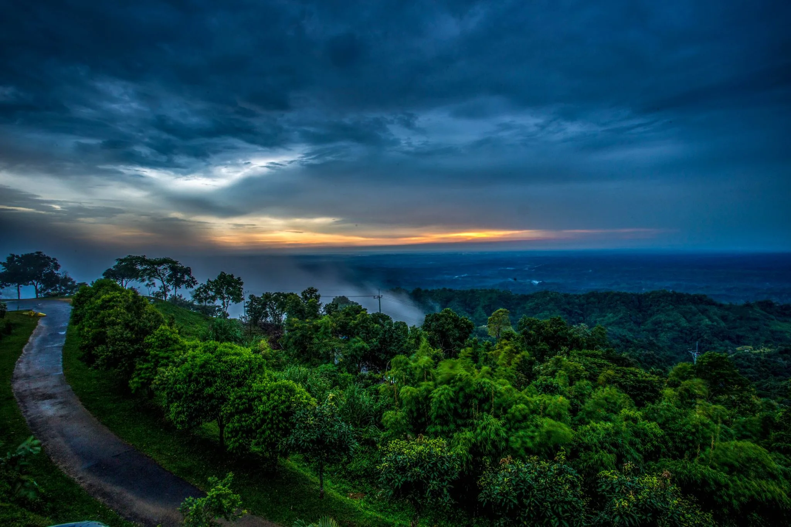
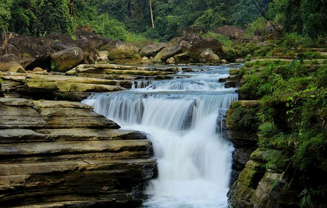
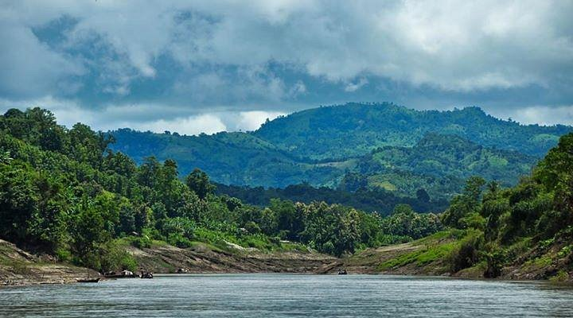
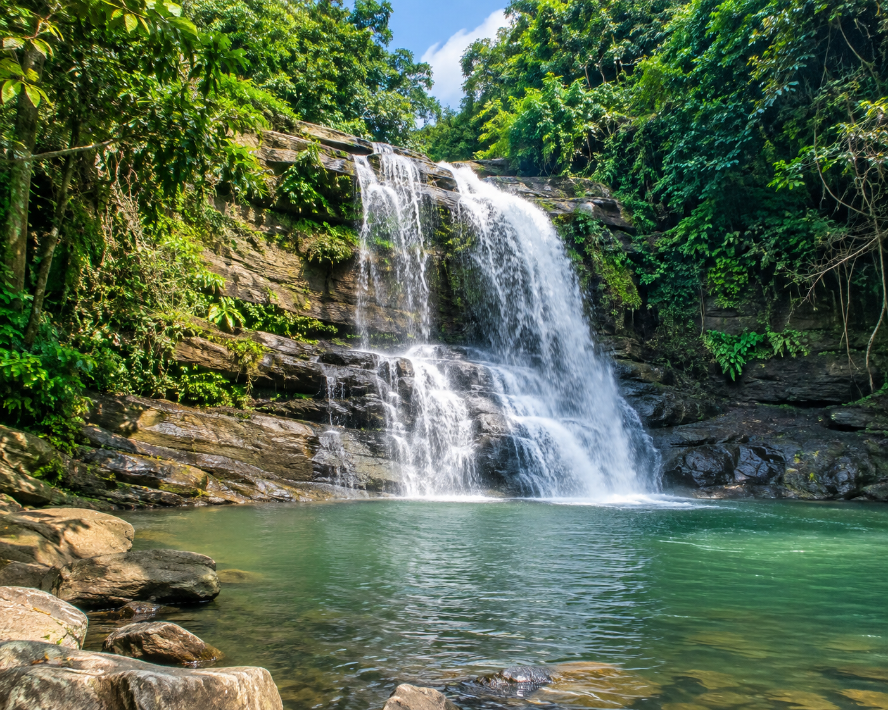

バンダルバンはバングラデシュで最も美しい山岳地域です。 緑豊かな山々、滝、湖、そして先住民族の文化が魅力です。

バングラデシュで最も有名な山のリゾート。 雲の上から美しい景色を見ることができます。

バングラデシュ最大級の滝。 自然が好きな人に人気があります。

山の上にある美しい湖。 キャンプやトレッキングで有名です。
高い山から素晴らしい景色を楽しめます。

人気の滝で、多くの観光客が訪れます。
ボート旅行や自然を楽しめる美しい川です。